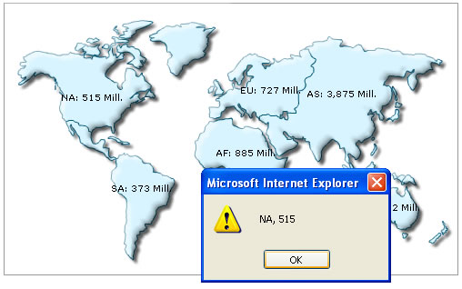

| Using JavaScript functions as links |
|
Instead of using simple links, you can also set JavaScript links using FusionMaps XT i.e., you can invoke a JavaScript function present in the same page (in which the map is present) when the end viewer clicks a map entity, marker or connector. To attain this, all you need to do is place the name of JavaScript function instead of the link URL, as under: <entity id='NA' value='515' link="JavaScript:myJS('NA, 515');"/> In the above code, myJS refers to a custom JavaScript function present in the HTML page that embeds this map. You can also specify any number of parameters for this function. However, you cannot use a semi-colon within the declaration. Since FusionMaps v3.1, we have also introduced the following new syntax: <entity id='NA' value='515' value='235' link="j-myJS-NA,515"/> The classical function-call notation of JavaScript has been replaced by following expression When you now click the map element, myJS function will be invoked and 'NA, 515' will be passed to the function as the function parameter. Here, we've passed the entity label and value just for demonstration purposes. In actual apps, you can pass identifier numbers or strings to each data. When the user clicks on the link, these identifiers can be sent back to your JavaScript functions for further actions (like loading detailed data for that identifier using AJAX or anything - the possibilities are endless). Let's quickly put up an example for this kind of links. We'll create a simple World Population Map. Each continent when clicked, will pass its label and value to our custom JavaScript function myJS, which (for the sake of demonstration) will just write it out in an alert box. We create JSExample.html for this example in DrillDown folder. It contains the following HTML code: |
<html>
<head>
<title>Drill Down Example</title>
<script language="JavaScript" src="../../Maps/FusionCharts.js"></script>
<SCRIPT LANGUAGE="JavaScript">
<!--
function myJS(myVar){
window.alert(myVar);
}
//-->
</SCRIPT>
</head>
<body>
<div id="mapdiv" align="center">
FusionMaps XT.
</div>
<script type="text/javascript">
var map = new FusionCharts("../../Maps/FCMap_World.swf", "Map1Id", "500", "300", "0", "0");
map.setXMLUrl("JSExample.xml");
map.render("mapdiv");
</script>
</body>
</html>
|
Here, we've a defined a function myJS which will respond to the clicks generated from the map. And now JSExample.xml looks as under: |
<map borderColor='005879' fillColor='D7F4FF' numberSuffix=' Mill.' includeValueInLabels='1' labelSepChar=': ' baseFontSize='9'>
<data>
<entity id='NA' value='515' link="JavaScript:myJS('NA, 515');"/>
<entity id='SA' value='373' link="JavaScript:myJS('SA, 373');"/>
<entity id='AS' value='3875' link="JavaScript:myJS('AS, 3875');"/>
<entity id='EU' value='727' link="JavaScript:myJS('EU, 727');"/>
<entity id='AF' value='885' link="JavaScript:myJS('AF, 885');"/>
<entity id='AU' value='32' link="JavaScript:myJS('AU, 32');"/>
</data>
</map> |
| As you can see above, for each data item, we've
defined a JavaScript link, that points to the custom function myJS.
To this function, we're passing the name and value of the entity.
When you view the map and click on a continent, you'll see something like under: |
|  |